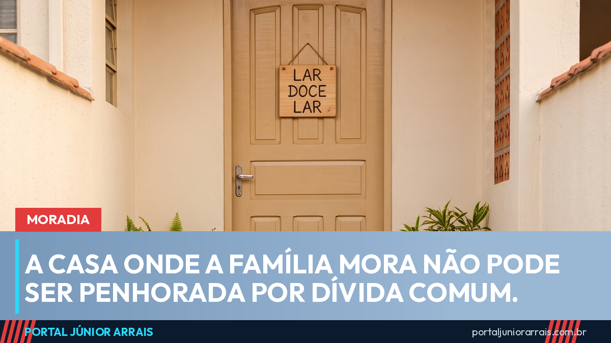

Bem de família: a casa onde a família mora não pode ser penhorada por dívida, salvo exceções

Quem tem dívidas costuma ter medo de perder a casa onde mora. A lei, porém, protege esse imóvel. A Lei 8.009/1990 diz, no art. 1º, que o imóvel residencial próprio do casal ou da entidade familiar é impenhorável e não responde por dívidas civis, comerciais, fiscais, previdenciárias ou de outra natureza. É o chamado bem de família.
O que é protegido
A proteção alcança o imóvel usado como moradia permanente e, em regra, também a construção, as plantações, as benfeitorias e os móveis que guarnecem a casa, desde que quitados, como geladeira, fogão, cama e televisão. Ficam de fora veículos, obras de arte e adornos suntuosos.
Não é preciso registrar nada em cartório para ter essa proteção: ela vale automaticamente para o imóvel onde a família mora. Se a família tem mais de um imóvel residencial, a proteção recai, em regra, sobre o de menor valor (art. 5º, parágrafo único), salvo se outro tiver sido registrado como bem de família.
Vale para quem mora sozinho
A palavra "família" não exige casal nem filhos. A Súmula 364 do STJ diz que o conceito de impenhorabilidade de bem de família abrange também o imóvel pertencente a pessoas solteiras, separadas e viúvas.
As exceções
O art. 3º da lei lista as dívidas que permitem a penhora mesmo da casa da família. As principais são:
- pensão alimentícia;
- financiamento para comprar ou construir o próprio imóvel;
- IPTU, taxas e contribuições devidas em função do imóvel, o que inclui a taxa de condomínio, conforme entendimento consolidado dos tribunais;
- hipoteca dada pelo próprio casal para assegurar dívida da família;
- fiança em contrato de locação: quem é fiador de aluguel pode perder o próprio imóvel.
Sobre a fiança, o STF decidiu no Tema 1127, em 2022, que é constitucional a penhora do bem de família do fiador também em contrato de locação comercial, e não só residencial. Por isso, pense bem antes de ser fiador de alguém.
A dívida de condomínio, por estar entre as exceções, pode levar ao leilão do imóvel, como explica esta matéria sobre condomínio atrasado.
Imóvel alugado também pode ter proteção
Os tribunais já reconheceram a proteção para o único imóvel da família que está alugado, quando o aluguel é usado para pagar a moradia da família em outro lugar ou para o sustento dela. A ideia é preservar o direito à moradia, que é o objetivo da lei. Cada caso, porém, depende de prova de como a renda é usada.
E se a casa for penhorada mesmo assim?
Às vezes, o credor pede a penhora e o juiz determina sem saber que se trata do imóvel onde a família mora. O devedor pode e deve alegar a impenhorabilidade no próprio processo, apresentando contas de luz, água e outros documentos que provem a moradia. A proteção pode ser alegada a qualquer momento antes da venda do imóvel. Procure um profissional de sua confiança ou a Defensoria Pública assim que receber a intimação.
Cuidado com golpe
Quem está endividado recebe propostas de supostas empresas que prometem "blindar" o imóvel ou "limpar" o nome mediante pagamento antecipado. A proteção do bem de família já existe por lei e não depende de contratar ninguém.
Desconfie também de cobranças com ameaça de "tomar a casa amanhã". Penhora e leilão só acontecem por ordem judicial, em processo no qual o devedor é chamado a se defender.
Conteúdo informativo — não substitui orientação individualizada sobre o seu caso.
Júnior Arrais · Advogado e editor do Portal Júnior Arrais
Advogado (OAB/MG 193.054, OAB/SP 535.563, OAB/RJ 268.781, OAB/PE 71.237, OAB/AL 24.340-A e OAB/PA 41.782-A), atuante em direito previdenciário e trabalhista, e comunicador de Ubá (MG). Escreve todos os dias sobre benefícios sociais, INSS, trabalho e economia do dia a dia, a partir do Diário Oficial, de portarias e de fontes oficiais, em linguagem simples. Conheça a linha editorial e a política de correções do portal.